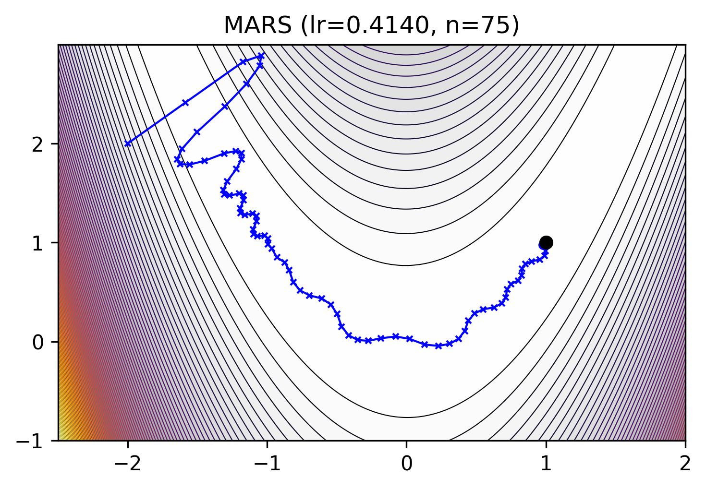

mlx_optimizers.MARS#
- class MARS(learning_rate: float | Callable[[array], array] = 0.003, betas: List[float] = [0.95, 0.99], eps: float = 1e-08, weight_decay: float = 0.0, amsgrad: bool = False, gamma: float = 0.025, is_approx: bool = True, mars_type: str = 'mars-adamw', optimize_1d: bool = False, learning_rate_1d: float | Callable[[array], array] = 0.003, betas_1d: List[float] = [0.9, 0.95], weight_decay_1d: float = 0.1)#
Make vAriance Reduction Shine [1].
MARS combines two main components: (a) a scaled stochastic recursive momentum that acts as a variance-reduced estimator of the full gradient, and (b) a preconditioner to approximates the second-order Newton’s method for better per-iteration complexity.
This is based on the following preconditioned variance-reduced update rules:
\[\begin{split}& \mathbf{m}_0 \gets 0, \quad \mathbf{x}_1 \gets \mathbf{x}_0 \\ & \text{For } \, t = 1 \text{ to } n: \\ & \quad \text{Sample } \xi_t \text{ and let } \mathbf{c}_t = \nabla f(\mathbf{x}_t, \xi_t) + \gamma_t \frac{\beta_1}{1 - \beta_1} \big( \nabla f(\mathbf{x}_t, \xi_t) - \nabla f(\mathbf{x}_{t-1}, \xi_t) \big) \\ & \quad \text{If } \|\mathbf{c}_t\|_2 > 1, \text{ then } \tilde{\mathbf{c}}_t = \frac{\mathbf{c}_t}{\|\mathbf{c}_t\|_2}, \text{ else } \tilde{\mathbf{c}}_t = \mathbf{c}_t \\ & \quad \mathbf{m}_t = \beta_1 \mathbf{m}_{t-1} + (1 - \beta_1) \tilde{\mathbf{c}}_t \\ & \quad \mathbf{x}_{t+1} = \arg \min_{\mathbf{x}} \big\{ \eta_t \langle \mathbf{m}_t, \mathbf{x} \rangle + \frac{1}{2} \|\mathbf{x} - \mathbf{x}_t\|_{\mathbf{H}_t}^2 \big\}\end{split}\]Hessian matrix approximations (
mars-adamw,mars-lion,mars-shampoo):mars-adamw
\[\begin{split}\mathbf{v}\_t &=\beta_2 \mathbf{v}\_{t-1}+(1-\beta_2) \big(\nabla f(\mathbf{x}\_t, \mathbf{\xi}\_t)\big)^2\\ \mathbf{H}_t &:= \sqrt{\text{diag}\Big(\mathbf{v}_t\Big)}\cdot \frac{1 - \beta_1^t}{\sqrt{1 - \beta_2^t}}.\end{split}\]mars-lion
\[\mathbf{H}_t := \sqrt{\text{diag}(\mathbf{m}_t^2)}.\]mars-shampoo(with Newton-Schulz iteration instead of SVD)
\[\begin{split}\mathbf{U}\_t, &\mathbf{\Sigma}\_t, \mathbf{V}\_t = \text{SVD}(\mathbf{G}\_t),\\ \mathbf{x}\_{t+1} &=\mathbf{x}\_t \eta_t\mathbf{U}_t\mathbf{V}\_t^\top.\end{split}\][1] Yuan, Huizhuo, Liu, Yifeng and Wu, Shuang and Zhou, Xun and Gu, Quanquan, 2024. MARS: Unleashing the Power of Variance Reduction for Training Large Models. https://arxiv.org/abs/2411.10438 AGI-Arena/MARS
- Parameters:
learning_rate (float or callable) – The MARS learning rate \(\eta\).
betas (List[float], optional) – The MARS coefficients \((\beta_1, \beta_2)\) for exponential moving average. Default:
[0.95, 0.99]eps (float, optional) – The term \(\epsilon\) added to the denominator to improve numerical stability. Default:
1e-8weight_decay (float, optional) – The MARS weight decay. Default:
0.0amsgrad (bool, optional) – Whether to use the AMSGrad variant. Default:
Falsegamma (float, optional) – Scaling parameter that controls the strength of gradient correction. Default:
0.025is_approx (bool, optional) – Whether to use the approximate version. Default:
Truemars_type (str, optional) – The MARS type {mars-adamw, mars-lion, mars-shampoo}. Default:
mars-adamwoptimize_1d (bool, optional) – Whether MARS should optimize 1D parameters. False, AdamW will be used for optimizing 1D parameters. Default:
Falselearning_rate_1d (float or callable) – The learning rate for 1D parameters. Default:
3e-3betas_1d (List[float], optional) – The coefficients for 1D parameters. Default:
[0.9, 0.95]weight_decay_1d (float, optional) – The weight decay for 1D parameters. Default:
0.1
Methods
__init__([learning_rate, betas, eps, ...])apply_single(gradient, parameter, state)Performs a single optimization step, updating \(m\) and \(v\)
init_single(parameter, state)Initialize optimizer state
set_last_grad(gradients)Set the last gradient for each parameter